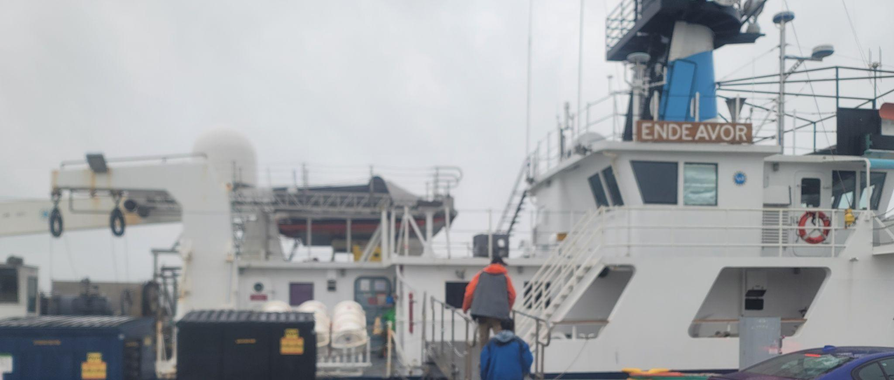
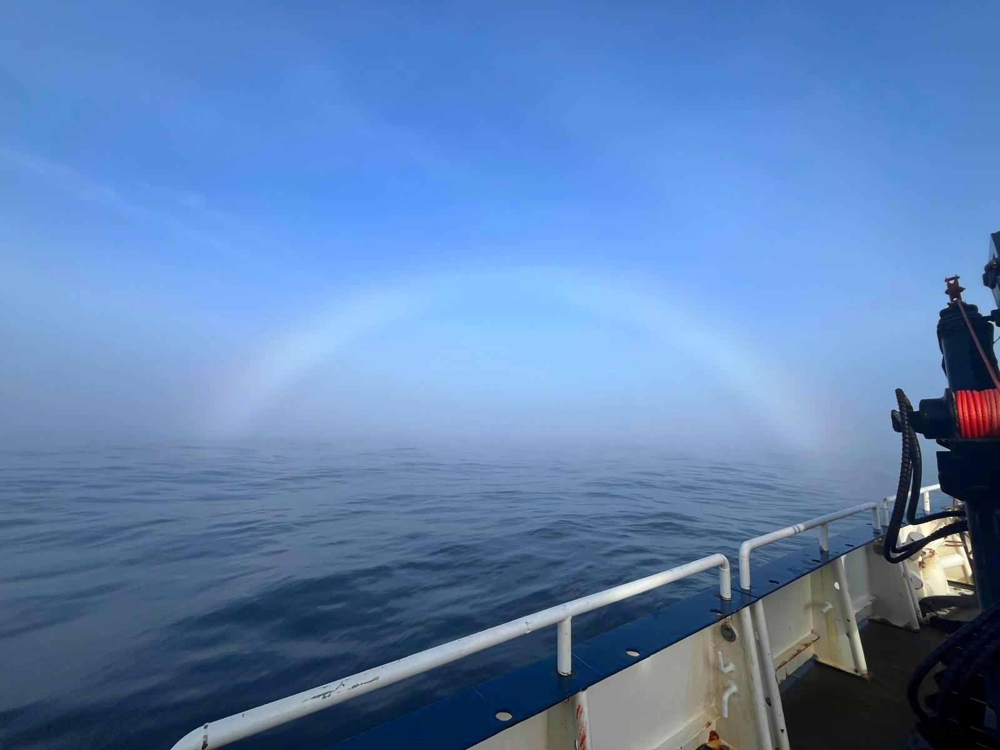
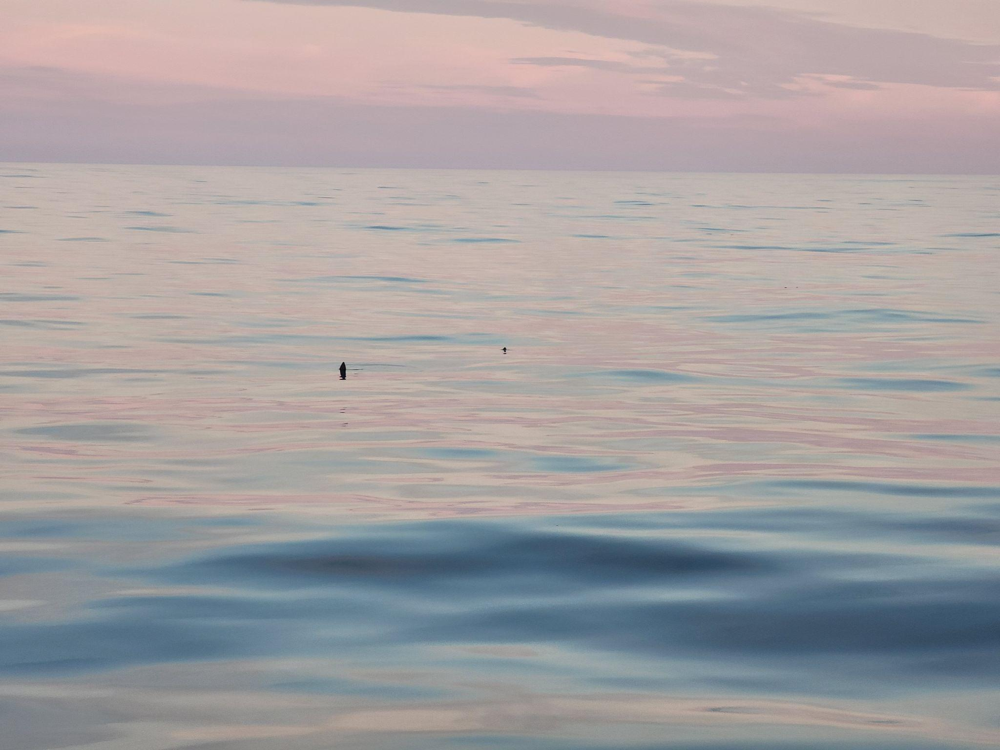
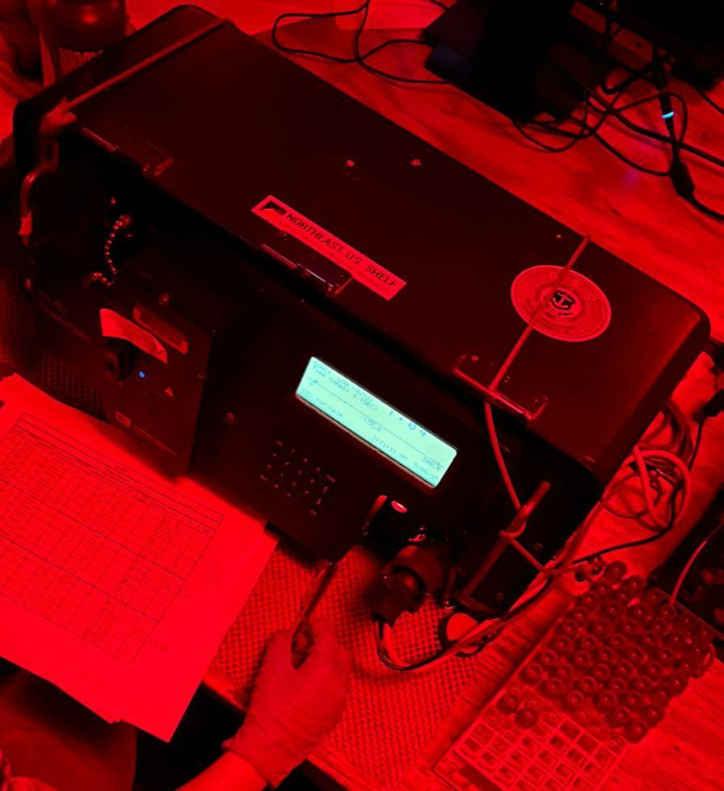
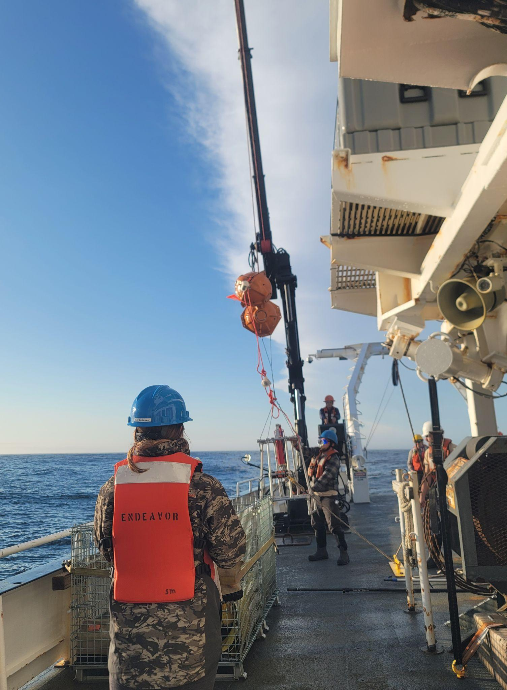
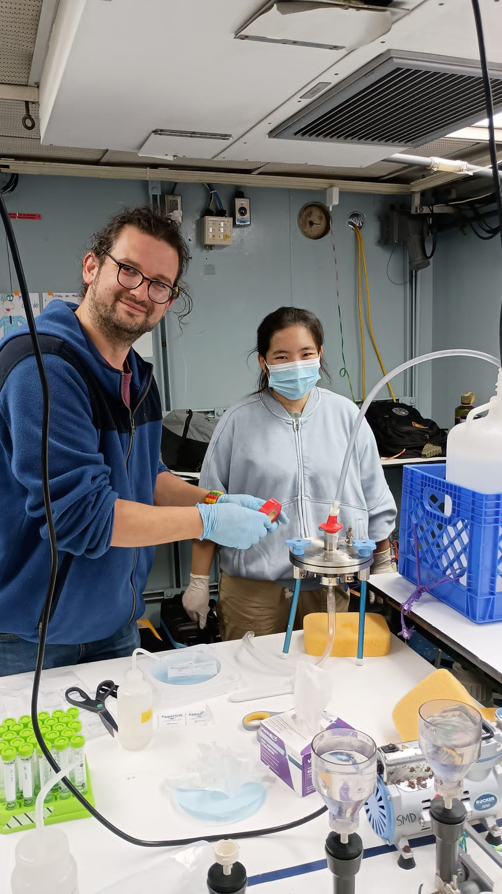
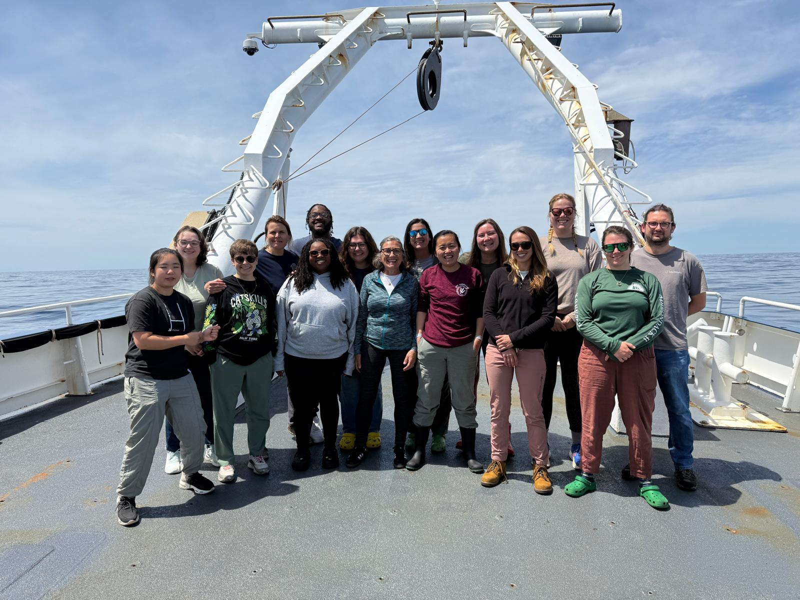

University of South Carolina
Peng Lab in Marine Microbial Ecology
NES LTER Cruise 2025 onboard R/V Endeavor
May 5-9, 2025 | Qintiantian Nong

Sunset aboard the R/V Endeavor during cruise EN729.
I was lucky enough to join the R/V Endeavor for an unforgettable five-day research cruise in early May 2025. It was my very first time on a research vessel, and I couldn't have asked for a better experience. The crew, staff, and scientists on board were incredibly kind and welcoming, which made the whole trip even more special.

R/V Endeavor, the research vessel for EN729.
The weather, however, had other plans. It was mostly cloudy and drizzly throughout the trip, and the sun didn't really make an appearance until the last day and a half. Still, nothing could take away the excitement and fun onboard. One thing that definitely kept spirits high was the food. There were plenty of options, and everything was absolutely delicious. It kept my energy up for research and made it easy to stay motivated.

Changing weather at sea.
We also had some amazing wildlife sightings along the way. We spotted a minke whale, several types of seabirds, and even common dolphins. One of the more unique highlights was seeing mola mola, or ocean sunfish. Their distinctive fins popping out of the water made them especially fun to spot.

A mola mola sighting from the ship.
This trip was part of the EN729 oceanographic research cruise, organized by the University of Rhode Island's Graduate School of Oceanography (URI GSO). It was conducted as part of the Northeast U.S. Shelf (NES) Long-Term Ecological Research (LTER) project and the Rhode Island Endeavor Program. The R/V Endeavor itself has an impressive history. Operated by URI for nearly five decades, it completed more than 700 scientific expeditions and supported research across many areas of marine science.
Our expedition focused on studying plankton communities in the Georges Bank and Stellwagen Bank regions, with the goal of better understanding how changing ocean conditions affect these important ecosystems. At the same time, many other research projects were happening on board. These included seawater chemical analysis, phytoplankton abundance measurements, and ocean floor filming to identify different marine species. One of my favorite moments was getting to watch fresh footage from the seafloor while having a meal. It made the experience feel even more memorable and immersive.

Phytoplankton abundance measurements underway.

Deck work during the EN729 cruise.
One of my objectives during the cruise was to enrich and isolate fungi from the open ocean. We collected seawater samples from layers where phytoplankton were the most abundant. These zones are important because fungal communities often live in close association with phytoplankton and depend on the organic carbon they produce. By targeting these areas, we increased our chances of successfully isolating marine fungi.

Adapting the filtration setup for seawater samples.
Unfortunately, on the first day of the cruise, my diaphragm pump, which is used to filter seawater, stopped working. This made filtration much more difficult and put the experiment at risk. Dr. Marrec quickly came up with a solution. Instead of using compressed air to push water through the filter, he redesigned the setup to use a vacuum pump, allowing us to pull water through the filter paper instead. This simple but effective adjustment saved the experiment and allowed me to continue my work.
Overall, the EN729 cruise was an incredibly memorable experience for me. I had the chance to learn so many new things, such as capturing plankton at night, deploying a deep-sea camera, and interpreting the chlorophyll maximum layer. I also gained hands-on experience estimating chlorophyll abundance, tying knots, and helping deploy CTD bottles. Huge thanks to Bonny, the amazing marine technician, for the guidance! Moments like these showed me just how fun and engaging marine science can be, even on a constantly rocking boat.
Beyond the technical skills, this trip taught me some valuable lessons. When working far from your home lab, it is essential to bring backup equipment. More importantly, I learned the importance of staying resilient and positive when things don't go as planned. Thinking creatively and asking for help can make all the difference.

The EN729 science team on deck.
This work was made possible through support from the Rhode Island Endeavor Program. I would also like to express my sincere thanks and appreciation to Captain Christopher Armanetti and the crew of the Endeavor, marine technicians Bonny and Jason, Chief Scientist Susanne Menden-Deuer, scientist Pierre Marrec, and Dr. Hongjie Wang, who invited us to join the cruise.